ZX Online
0. General Introduction
All Quantum circuits are made of spiders and wires…
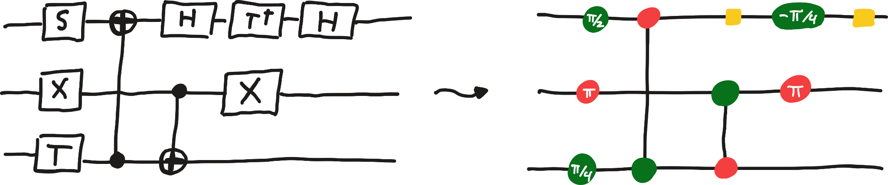
Right: The same circuit written with spiders and wires!
(those yellow boxes are also spiders, as we will soon see)
Source: https://arxiv.org/pdf/2012.13966
This fact lets us reason about quantum circuits using the ZX calculus.
1. Yanking
Sometimes wires get a little disorganized. Like normal wires, only their inputs and outputs are what matter, so we can always straighten them out to make a diagram nicer.
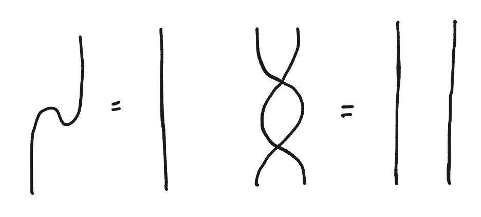
Exercise
Shake the wires to straighten them!
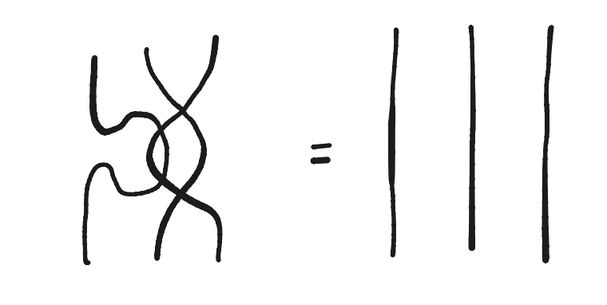
2. Spider Fusion
Spiders of the same colour can fuse into each other if they’re connected by a plain wire. Opposite colours do not.
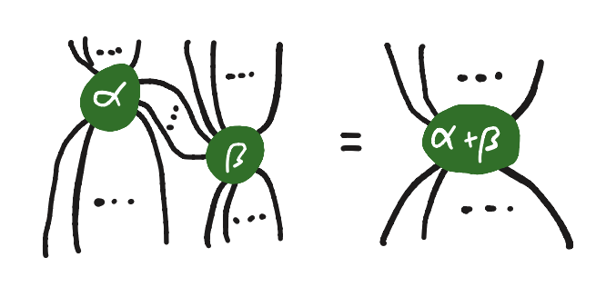
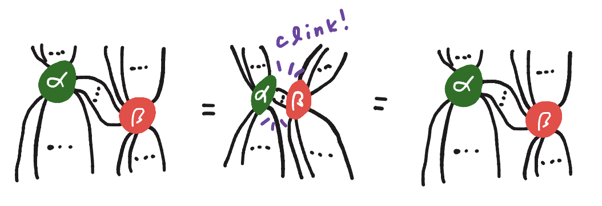
Exercise
Simplify the following circuit using spider fusion!
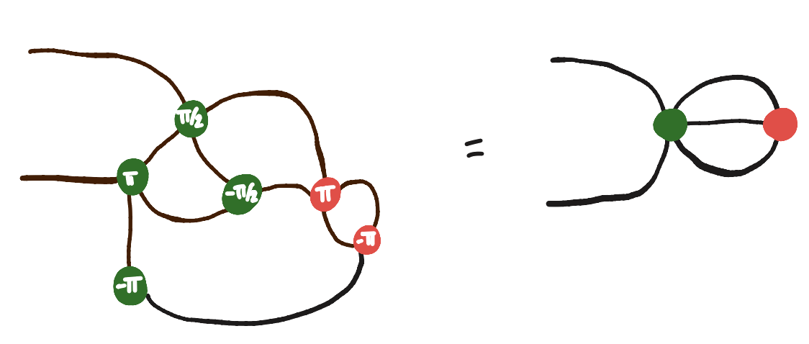
3. Identity
When a phaseless spider only has one input and one out, you can remove it from the wire.
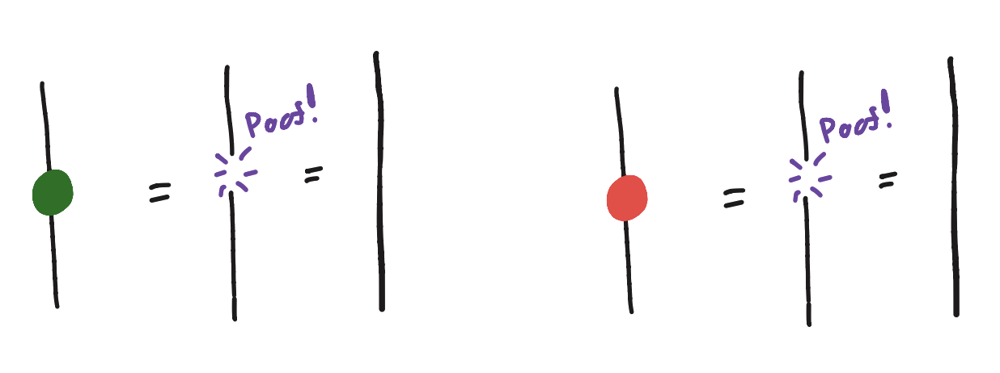
Exercise
Use identity removal to turn the following into an identity wire…
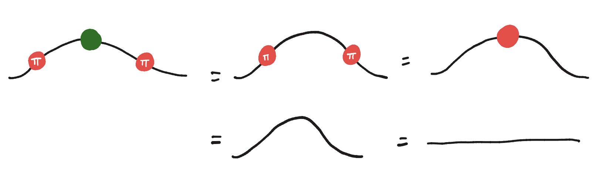
4. Colour Change
This is a Colour Change Box. It might not look like it, but it is actually made of green and red spiders as well:
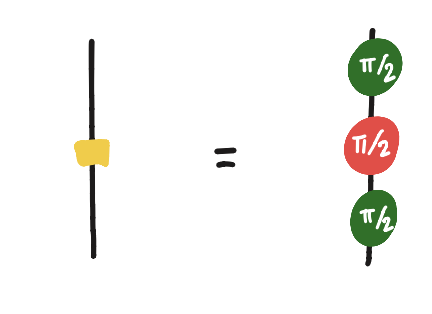
4. Colour Change
You can push colour change boxes through green or red spiders to flip their colour. All the other legs get a copied box from this process:
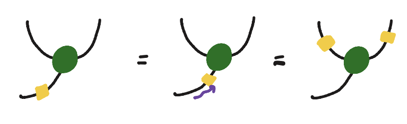
Exercise
Simplify the diagram using the colour change property:
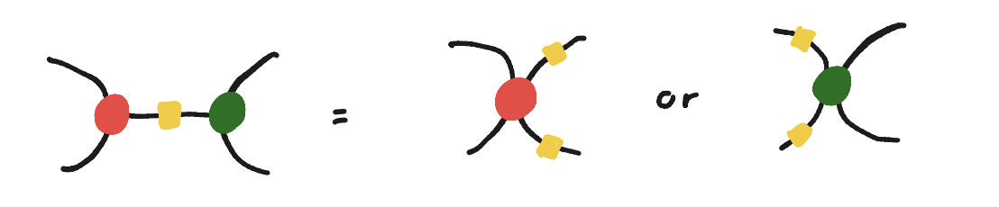
4. Colour Change
Two colour change boxes on the same wire cancel each other out.
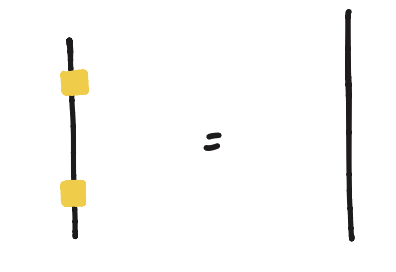
Exercise
Use the properties of the colour change box to simplify:
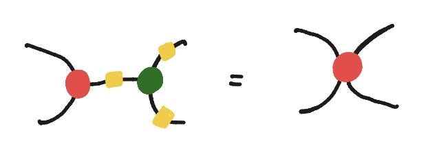
5. Leg Chop
When a green spider is connected to a red spider by two parallel wires, you can chop them off. (sorry, spiders).
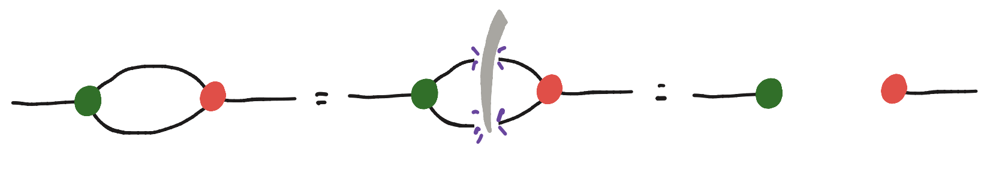
Exercise
Use leg chopping to simplify the following diagram.
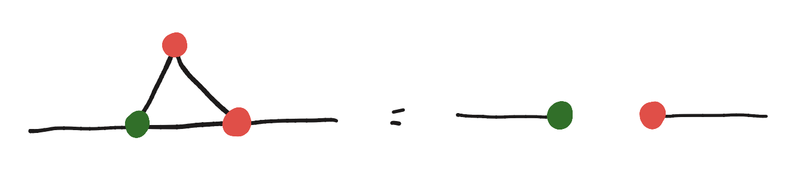
6. Copy
We can push blank (or phase pi) red spiders through any blank green spider in the following way. We’re basically copying the red spider across all the wires connected to the green spider.
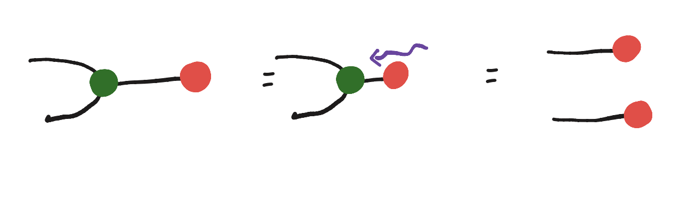
Exercise
Show that we can use this to simplify the following diagram.
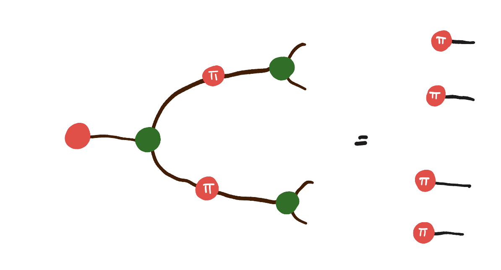
7. Square Popping
Now for one of the most useful rewrites -- square popping. Given a square of spiders in the following setup, you can simplify it to just two.
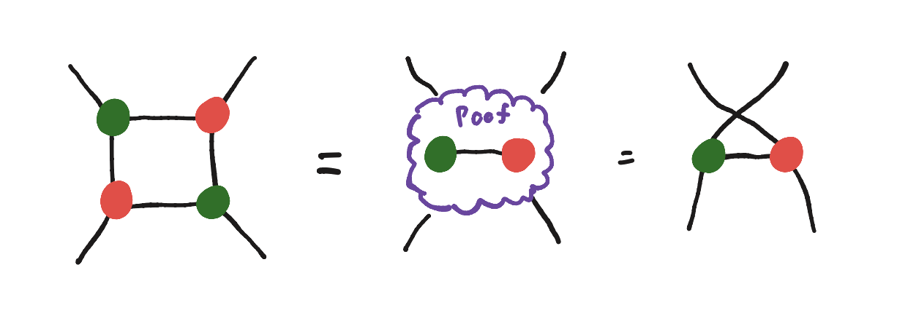
Exercise
Let’s use this powerful rewrite to simplify the diagram:
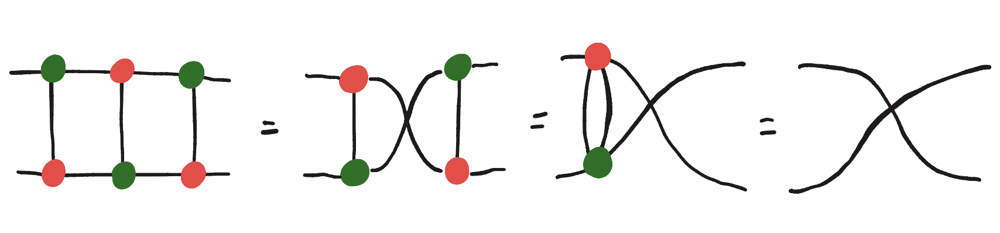
7. Square Popping
Conversely, we can use this rule to push a green spider through a red spider:
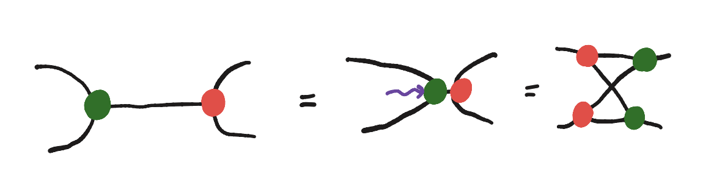
Exercise
Push the green spider through the red one to simplify the following diagram. [Without the copy rule]
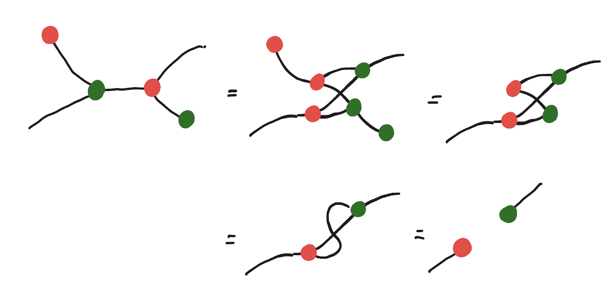
8. Final Exercise
Prove that Square Popping lets us leg chop! [Without the hopf rule]
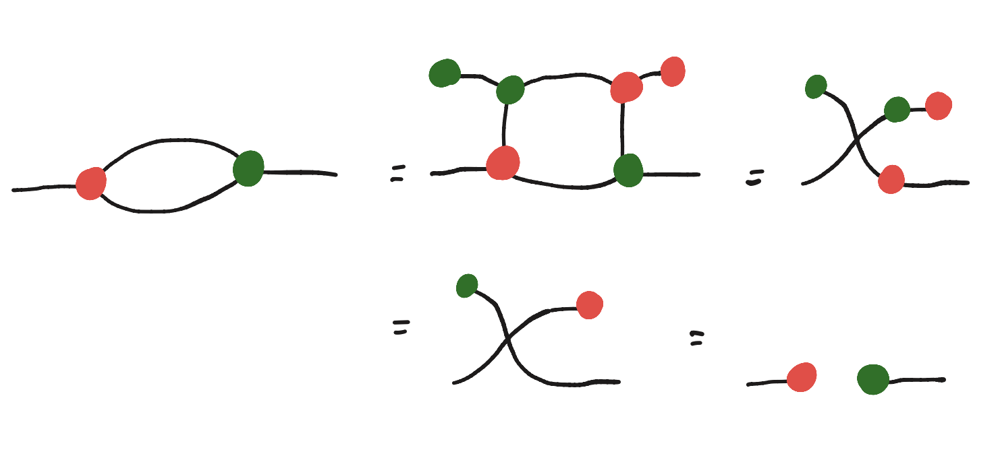